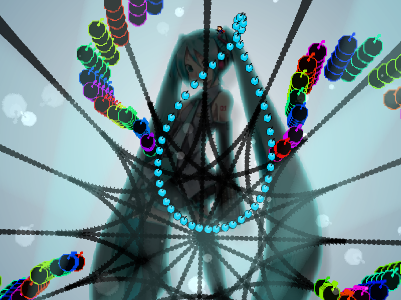
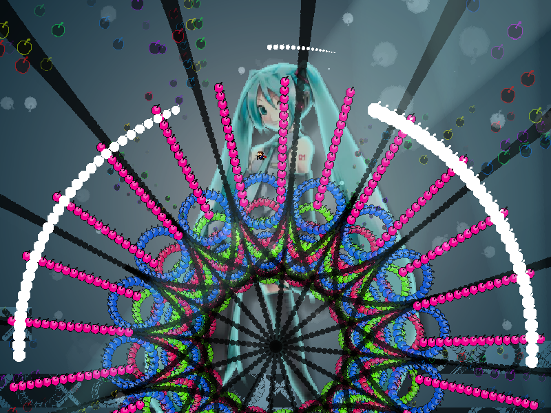
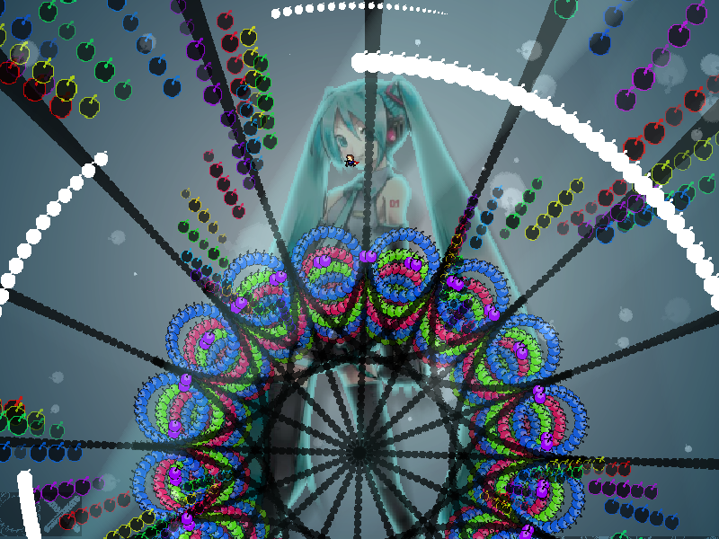

chapter11 - section5

| creator | segment | label | jump |
|---|---|---|---|
| NN | 2:33.60~2:35.90 | P/Q+Q/Q | infinite |
角度のみがランダムな弾幕です。
画面中央を中心として生成される虹色の円形弾幕に関して、2:34.00~2:34.80で自機狙い弾幕として形状が歪んでいる（fig.11-5.1.a）間に、2:34.80における発射角度（fig.11-5.1.b）を判断することを目的としています。


また、2:34.30以降画面下部を中心として生成される白色の円弧状弾幕（fig.11-5.2）については、初期角度、半径、回転方向が2:34.00におけるプレイヤーの位置を基準として決定されます。
これらの回転方向に関して、2:34.00の時点でプレイヤーが画面左半分に滞在している場合は反時計回り、右半分に滞在している場合は時計回りとなることに注意が必要です。
